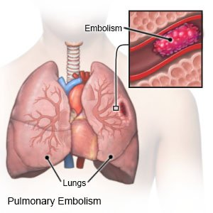

Pulmonary Embolus

CAUSES
Blood clots can form for a variety of reasons. PEs are most often caused by deep vein thrombosis (DVT), a condition in which blood clots form in veins deep in the body. The blood clots that most often cause PEs begin in the legs or pelvis.
SYMPTOMS
Symptoms of a PE
- anxiety
-
clammy or bluish skin
-
chest pain that may extend into your arm, jaw, neck, and shoulder
-
fainting
-
irregular heartbeat
-
lightheadedness
DIAGNOSIS
A doctor will typically perform one or more of the following tests to discover the cause of your symptoms:
- Chest X-ray. This is a standard, noninvasive test that lets a doctor see your heart and lungs to look for other obvious causes of your symptoms. A PE can not be diagnosed with this test. The most common finding of a PE on a chest X-ray is “normal.”
-
Electrocardiography (ECG). An ECG measures your heart’s electrical activity. A PE can not be diagnosed on an ECG. This test will check for other causes of chest pain.
-
Computed tomography pulmonary angiography (CTPA). This test is the first-choice diagnostic imaging method because it’s sensitive and specific for the diagnosis of PE. However, it requires the use of intravenous (IV) contrast. Therefore, people with kidney problems will likely not be able to have this test because contrast may cause or worsen kidney disease. When a CTPA can not be performed, the doctor may instead consider a VQ scan to diagnose a PE.
-
Ventilation/perfusion scan (VQ). A VQ scan is carried out in two parts. In the first part, radioactive material is breathed in, and pictures are taken to look at the airflow in your lungs. In the second part, a different radioactive material is injected into a vein in your arm, and more images are taken to see the blood flow in your lungs.
-
Magnetic resonance pulmonary angiography (MRPA). This is not recommended as a first-line test for diagnosing PE, but it may be an imaging option to diagnose PE in people who can neither receive a CTPA nor a VQ scan. Potential advantages of MRPA are that no ionizing radiation is involved, and the examination can be combined with MR venography in the same sitting to look for DVT.
-
Venography. A venogram is an invasive test that is rarely used for the diagnosis of only a DVT. This is a specialized X-ray of the veins in your legs and also requires the use of contrast.
-
Pulmonary angiography. A pulmonary angiography is an invasive test that’s rarely used to diagnose an acute PE. It involves making a small incision so a doctor can guide specialized tools through your veins. The doctor will use contrast to see the blood vessels in the lung.
Duplex venous ultrasound. This is a practical and noninvasive test to only diagnose a DVT. It’s important to remember that you can still have a PE even if the ultrasound is negative for a DVT. This test uses radio waves to visualize the blood flow and check for blood clots in your legs.
-
D-dimer test. This is a type of blood test used to screen for signs of a PE or DVT based on the your probability of having a clot. A doctor can not make a diagnosis based on this blood test. If the result is positive, the doctor must confirm the diagnosis with the appropriate imaging method.
TREATMENTS
Your treatment for a PE depends on the size and location of the blood clot. If the problem is minor and caught early, a doctor may recommend medication as treatment. Some drugs can break up small clots.